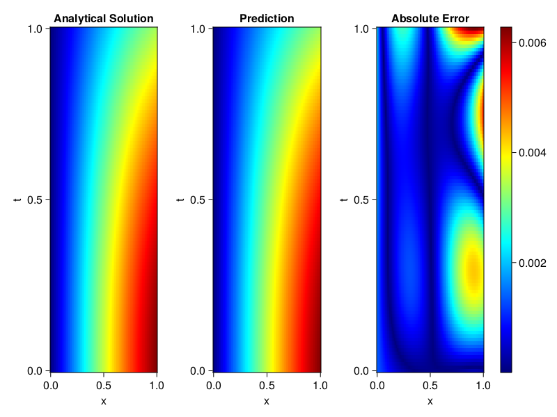
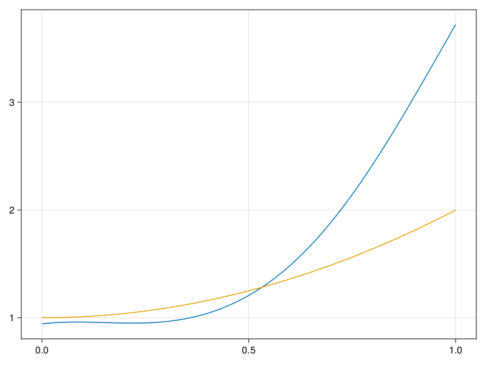

Inverse problem for the wave equation with unknown velocity field
We are going to sovle the wave equation.
using Sophon, ModelingToolkit, IntervalSets
using Optimization, OptimizationOptimJL
@parameters x, t
@variables u(..), c(..)
Dₜ = Differential(t)
Dₜ² = Differential(t)^2
Dₓ² = Differential(x)^2
s(x,t) = abs2(x) * sin(x) * cos(t)
eq = Dₜ²(u(x,t)) ~ c(x) * Dₓ²(u(x,t)) + s(x,t)
bcs = [u(x, 0) ~ sin(x),
Dₜ(u(x, 0)) ~ 0,
u(0, t) ~ 0,
u(1, t) ~ sin(1) * cos(t)]
domains = [t ∈ Interval(0.0, 1.0),
x ∈ Interval(0.0, 1.0)]
@named wave = PDESystem(eq, bcs, domains, [t,x], [u(x,t),c(x)])\[ \begin{align} \frac{\mathrm{d}}{\mathrm{d}t} \frac{\mathrm{d}}{\mathrm{d}t} u\left( x, t \right) =& c\left( x \right) \frac{\mathrm{d}}{\mathrm{d}x} \frac{\mathrm{d}}{\mathrm{d}x} u\left( x, t \right) + \cos\left( t \right) \left|x\right|^{2} \sin\left( x \right) \end{align} \]
Here the velocity field $c(x)$ is unknown, we will approximate it with a neural network.
pinn = PINN(u = FullyConnected((2,16,16,16,1), sin),
c = FullyConnected((1,16,16,1), tanh))
sampler = QuasiRandomSampler(500,100)
strategy = NonAdaptiveTraining(1, (10,10,1,1))NonAdaptiveTraining{Int64, NTuple{4, Int64}}(1, (10, 10, 1, 1))Next we generate some data of $u(x,t)$. Here we place two sensors at $x=0.1$ and $x=0.5$.
ū(x,t) = sin(x) * cos(t)
x_data = hcat(fill(0.1, 1, 50), fill(0.5, 1, 50))
t_data = repeat(range(0.0, 1.0, length = 50),2)'
input_data = [x_data; t_data]
u_data = ū.(x_data, t_data)1×100 Matrix{Float64}:
0.0998334 0.0998126 0.0997503 0.0996464 … 0.275281 0.267213 0.259035Finally we construct the inverse problem and solve it.
additional_loss(phi, θ) = sum(abs2, phi.u(input_data, θ.u) .- u_data)
prob = Sophon.discretize(wave, pinn, sampler, strategy; additional_loss=additional_loss)
@time res = Optimization.solve(prob, BFGS(), maxiters=1000)u: ComponentVector{Float64}(u = (layer_1 = (weight = [0.5771313977902662 -1.175335272047435; -0.5922764488698403 0.08274153558524651; … ; 0.0455391965304402 -0.900941251384495; -0.8600688746354148 0.24356174903353497], bias = [-0.1520422694453313; -0.2165978911478273; … ; -0.3324168543170429; -0.2596243932254322;;]), layer_2 = (weight = [-0.7028186027804664 0.18587478248419054 … 0.4116524472713102 -0.19839908807235154; 0.22281405206106075 0.2788309655433667 … 0.08832071429742533 -0.47524690299531164; … ; 0.22969986951182336 0.009492127544254235 … 0.4572006690765958 -0.24690019234770022; 0.16432859548991044 0.08936366931987035 … 0.044957701014636635 0.06952041989821171], bias = [-0.008357222959306044; 0.026656706774114986; … ; 0.12581407986404358; -0.13839870064635942;;]), layer_3 = (weight = [0.4063226781578025 0.4709901138651364 … -0.11263488580000387 0.11345412097794991; -0.51764419216768 -0.3107559763215154 … 0.28681827297597645 0.4021786595274893; … ; -0.36796134206153874 -0.06928995399782063 … 0.11712434585423762 0.4445303343895799; -0.4085152141647072 -0.4524221626404115 … 0.44014744015846907 0.4914764387239052], bias = [-0.21773376788706444; -0.1299522989965103; … ; -0.0012301232890377424; -0.013169604769382158;;]), layer_4 = (weight = [-0.4783017517764913 -0.1321545092733853 … 0.12959354147461877 -0.19798589642223785], bias = [-0.3057445375260816;;])), c = (layer_1 = (weight = [-2.813744118019836; 0.382863493194871; … ; -1.031695471299467; 1.8234362817819516;;], bias = [0.23526734102088864; -0.42425940311954036; … ; 0.5389190722014501; -0.049852172640379784;;]), layer_2 = (weight = [-0.5763979725484738 -0.7166231217949127 … -0.46427039317727903 -0.6429761585139742; 0.27778361558713377 0.2086618176652734 … -0.43406676701492614 0.7041146839870059; … ; -0.49465552300287363 -0.2681330706202488 … 0.29487823206651936 -0.4073549116601209; -0.12427009315248169 0.099716424485753 … -0.17645732629047045 -0.20467871797306486], bias = [0.0004932703828037511; 0.01957445246143552; … ; -0.01625261232209672; 0.11629279866807261;;]), layer_3 = (weight = [0.1308368609208592 0.08771343074917178 … -0.08413637813945674 0.3998551657636718], bias = [0.6621995161255781;;])))Let's visualize the predictted solution and inferred velocity
using CairoMakie
ts = range(0, 1; length=100)
xs = range(0, 1; length=100)
u_pred = [pinn.phi.u([x, t], res.u.u)[1] for x in xs, t in ts]
c_pred = [pinn.phi.c([x], res.u.c)[1] for x in xs]
u_true = [ū(x, t) for x in xs, t in ts]
c_true = 1 .+ abs2.(xs) |> vec
axis = (xlabel="x", ylabel="t", title="Analytical Solution")
fig, ax1, hm1 = heatmap(xs, ts, u_true, axis=axis; colormap=:jet)
ax2, hm2= heatmap(fig[1, end+1], xs, ts, u_pred, axis= merge(axis, (;title = "Prediction")); colormap=:jet)
ax3, hm3 = heatmap(fig[1, end+1], xs, ts, abs.(u_true .- u_pred), axis= merge(axis, (;title = "Absolute Error")); colormap=:jet)
Colorbar(fig[:, end+1], hm3)
fig
fig, ax = lines(xs, c_pred)
lines!(ax, xs, c_true)
fig